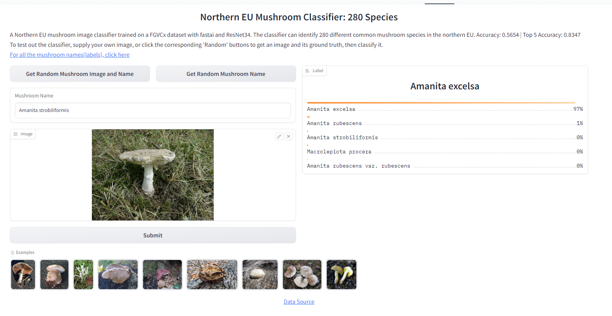
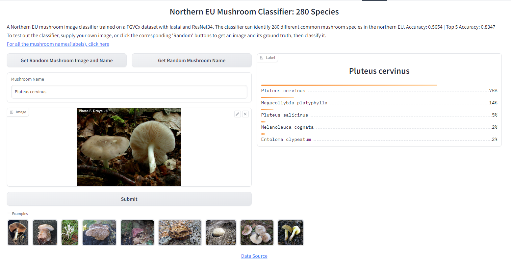

Project Deep Shroom Returns (with 280 different species!)
A North EU mushroom image classifier trained on a FGVCx dataset with fastai and ResNet34.

Project Deep Shroom Returns (with 280 different species!) | 2023.06.03 | Full Code

Using Python and fast.ai, pre-processed and trained a ResNet34 model on a FGVCx dataset with 280 different mushroom species and around 45,000 different mushroom images, labels indicated by folder names. Deployed and published using Gradio on Hugging Face: click here, specifically its “Block†concept that is more complicated but more flexible than “Interfaceâ€. Achieved Accuracy: 0.5654 | Top 5 Accuracy: 0.8347.